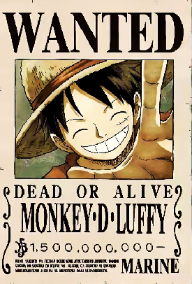
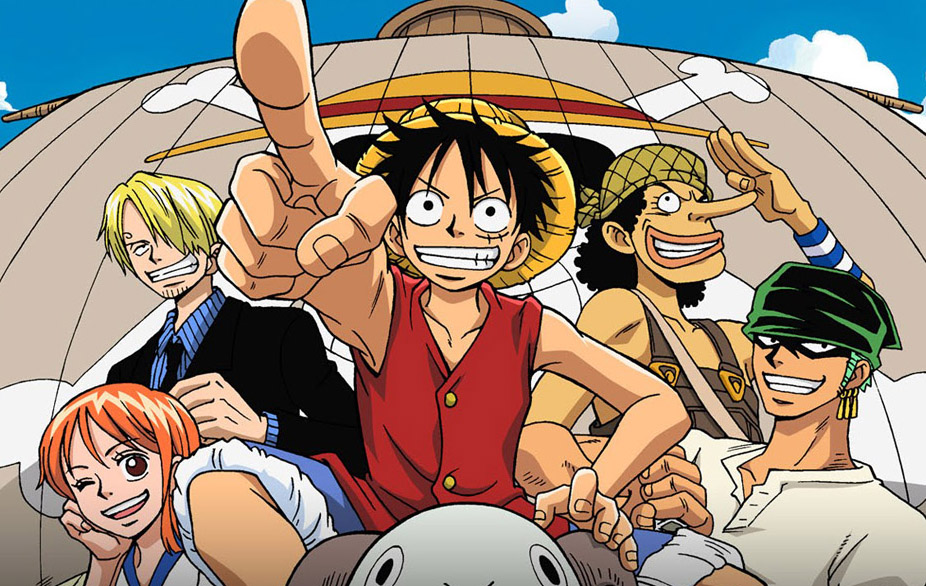

Monkey D. Luffy is a young pirate from the village of Foosha in the East Blue. He travels with his crew of 10 in search of the One Piece a legendary treasure that, if found, will make the finder King of the Pirates.
 When Luffy was young, he ate a rare food called a Devil Fruit that gave him special superhuman powers. The one he consumed was called a Gum Gum Fruit and gave him the ability to stretchhhhhhhh his limbs as if they were one of these things →
When Luffy was young, he ate a rare food called a Devil Fruit that gave him special superhuman powers. The one he consumed was called a Gum Gum Fruit and gave him the ability to stretchhhhhhhh his limbs as if they were one of these things →
 Look, he may not seem like an all powerful being, but he has actually ***defeated*** hundreds of people! He may look like a skinny little kid, but he's overpowered some of the most terrifying and well known villains to ever sail the ocean. It's no wonder is bounty is over $1billion!
Here are a few he's ticked off his list:
-Captain Arlong- - A half man, half fish like creature from the Grand Line
-Eneru- - A powerful man who can control lightning and forced some people to call him "God"
Crocodile- -Stole rain from a desert island for TWENTY years
But he couldn't have done it alone.

As a pirate, Luffy has to have a strong crew! Luckily he's met some pretty unique friends along his adventures. Here are the original four that helped him get to the Grand Line: the most dangerous but treasure filled ocean in the world. Each of them joined the crew inspired by Luffy's determination of achiving his dream. With the promise of finding their dreams as well, these powerful and loyal friends joined the straw hat pirates.
| Friend's name | Their dream | Special Skills |
|---|---|---|
| Zoro | Wishes to be the strongest Swordsman in the world | Three sword style fighting |
| Nami | She wants to make maps of the entire ocean! ***She also really likes money 🤑*** | Navigation, thievery |
| Usopp | Dreams of becoming a great warrior of the sea like his famous pirate father | Sniper, inventor |
| Sanji | He is looking for the All Blue, an ocean that hosts many rare sea creatures | World class cook, kicking ***He has freakishly long legs*** |